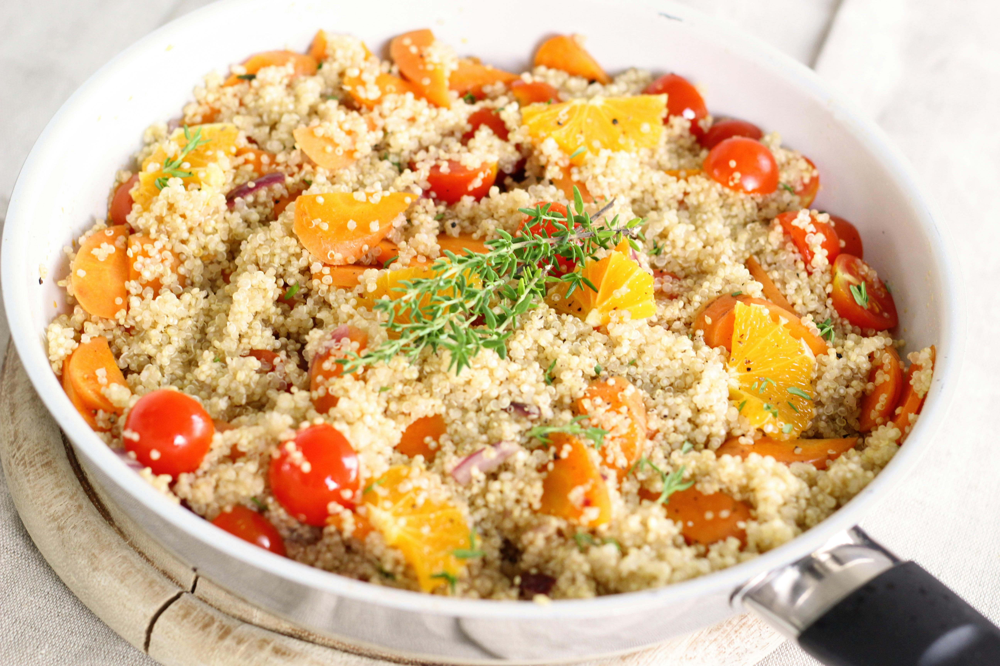

The Best Vegan Recipes
Explore a variety of delicious vegan recipes that are both healthy and easy to make at home. Whether you are new to vegan cooking or looking to expand your culinary repertoire, this guide offers a selection of recipes that will satisfy your taste buds and provide essential nutrients.
Ingredients
- 1 cup quinoa
- 2 cups water
- 1 cup chopped vegetables (bell peppers, carrots, etc.)
- 2 tablespoons olive oil
- Salt and pepper to taste
Instructions
1. Rinse quinoa under cold water.
2. Combine quinoa and water in a pot. Bring to a boil, then reduce heat and simmer for 15 minutes.
3. In a separate pan, heat olive oil and sauté vegetables until tender.
4. Mix cooked quinoa with vegetables. Season with salt and pepper.
5. Serve warm or cold.